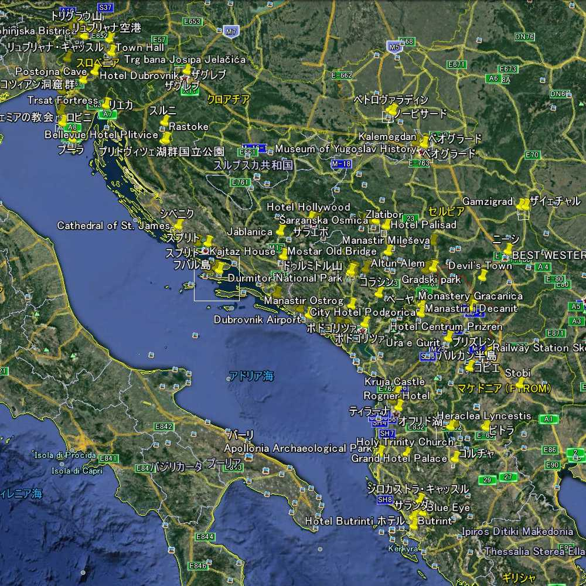

Belgrade Museum Novi Sad Petrovaradin Oplenac Romuliana Zaječar Djavolja varoš Prolom Petrova Crkva Novi Pazar Djurdjevi Stupovi Studenica Stari Ras Sopocani Zlatar Mileševa Zlatibor Sargan8 Visegrad Sarajevo Tunnel Groblje Jablanica Mostar Mosque House Kotor Budva Sveti Stefan Skadar Lake Ostrog Crno Jezero Tara Pećka Dečani Prizren Stone Castle Shenjtë Gracanica Prishtinë Skopje Teresa Chifte Hamam Ascension Skopsko Kale Mustafa Paşa Clement Stobi Rosoman Bitola Heraclea Ohrid Naum Korçë Ksamil Butrint Sarandë Blue Eye Gjirokaster Apollonia Berat Durrës Krujë Tirana Ljubljana Bled Castle Island Church Bohinj Railway Vogel Slap Savica Vintgar Kranjska Gora Tolmin Skocjan Postojna Piran Poreč Rovinj Pula Rijeka Zagreb Mirogoj Rastoke Plitvička Zadar Šibenik Trogir Split Hvar Stari Grad Ston Dubrovnik